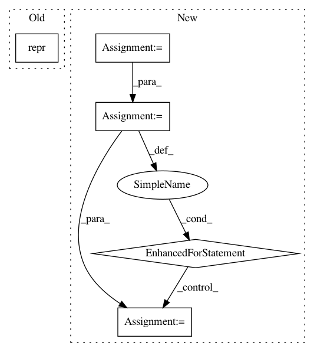

4956dc485f78ef2b7c5f4a13f8abb7a24cfbb1bb,flow/scenarios/highway/gen.py,HighwayGenerator,specify_nodes,#HighwayGenerator#Any#,20
Before Change
nodes = [{
"id": "begin",
"x": repr(0),
"y": repr(0)
}, {
"id": "end",
"x": repr(length),
"y": repr(0)
After Change
def specify_nodes(self, net_params):
See parent class.
length = net_params.additional_params["length"]
num_edges = net_params.additional_params.get("length", 1)
segment_lengths = np.linspace(0, length, num_edges+1)[1:]
nodes = []
for i in range(num_edges):
nodes += [{
"id": "begin_{}".format(i),
"x": repr(segment_lengths[i]),
"y": repr(segment_lengths[i])
}, {
"id": "end_{}".format(i),
"x": repr(segment_lengths[i+1]),
"y": repr(segment_lengths[i+1])
}]
return nodes
def specify_edges(self, net_params):
See parent class.
In pattern: SUPERPATTERN
Frequency: 3
Non-data size: 5
Instances
Project Name: flow-project/flow
Commit Name: 4956dc485f78ef2b7c5f4a13f8abb7a24cfbb1bb
Time: 2018-09-16
Author: vinitsky.eugene@gmail.com
File Name: flow/scenarios/highway/gen.py
Class Name: HighwayGenerator
Method Name: specify_nodes
Project Name: acl-org/acl-anthology
Commit Name: 9773c6f25c3f526e3ac9b1d40a908b3cc9d67c51
Time: 2019-02-28
Author: bollmann@linguistics.rub.de
File Name: bin/anthology/people.py
Class Name: PersonIndex
Method Name: register
Project Name: probcomp/bayeslite
Commit Name: fea06e225b785449a30455d29f959c879d620c0c
Time: 2016-06-28
Author: riastradh+probcomp@csail.mit.edu
File Name: src/compiler.py
Class Name:
Method Name: compile_simulate